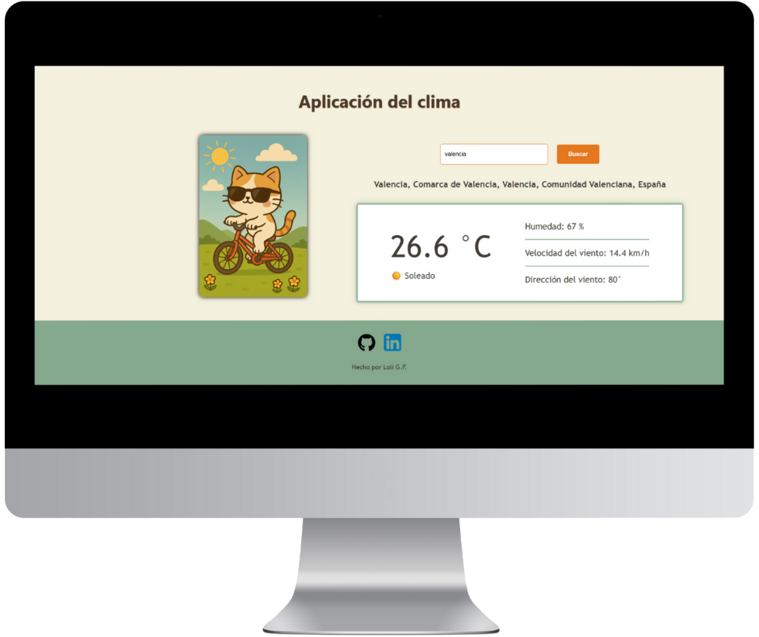
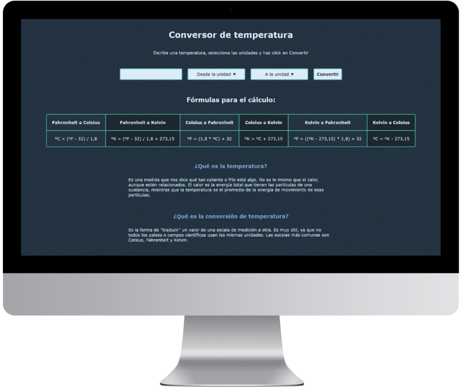
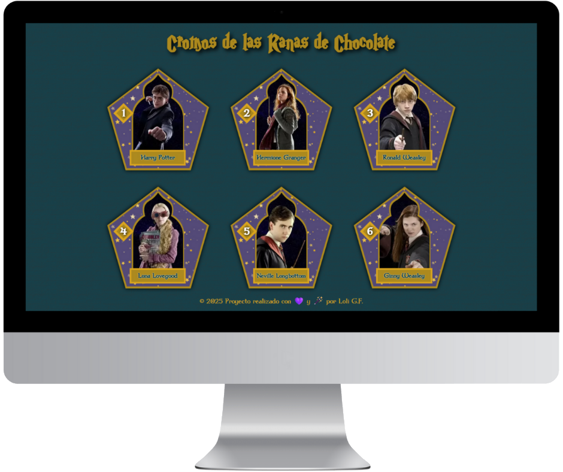
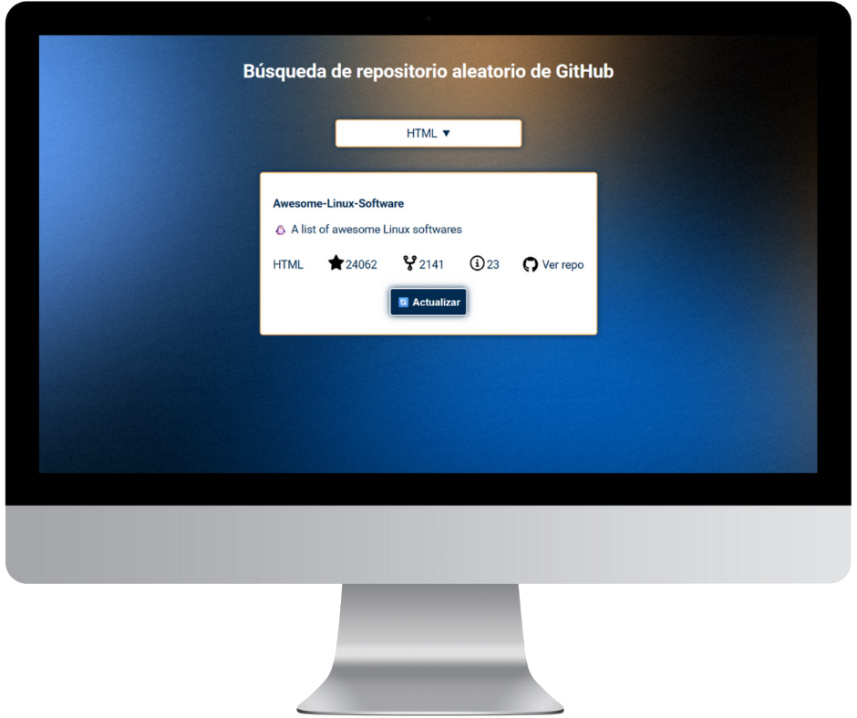

App del clima
App que muestra el clima actual usando la API de OpenWeather



Conversor de temperatura
Conversor de temperatura entre Fahrenheit, Celsius y Kelvin

Cromos ranas chocolate
Recreación de los cromos de rana de chocolate de la saga de Harry Potter

Repositorios aleatorios de GitHub
Muestra un repositorio aleatorio usando la API de GitHub